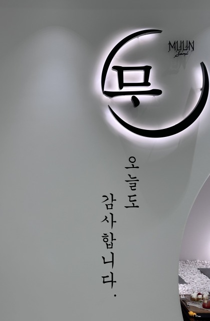
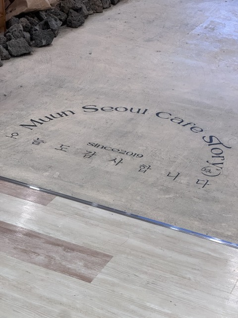
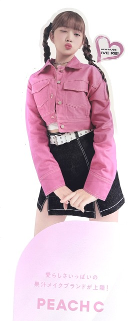

MuunSeoulの看板(壁)

原宿に本店を持つカフェ[MUUN SEOUL]の横浜店の看板。
MUUN(문)の文字と月のイラストを組み合わせて作ったロゴマーク。
店舗入口部分の壁にある。
日付：2023年10月８日
撮影者：木村涼
MuunSeoulの看板(床)

原宿に本店を持つカフェ[MUUN SEOUL]の横浜店の看板。
MUUN(문)の文字と月のイラストを組み合わせて作ったロゴマーク。
店舗入口部分の床にある。
日付：2023年10月８日
撮影者：木村涼
피치씨/Peach Cのコスメの広告看板

横浜ビブレ内のSHOP LISTの看板。
KPOPアイドルのIVEのReiが看板になっている。
피치씨/Peach Cのコスメの広告看板。
日付：2023年10月８日
撮影者：木村涼